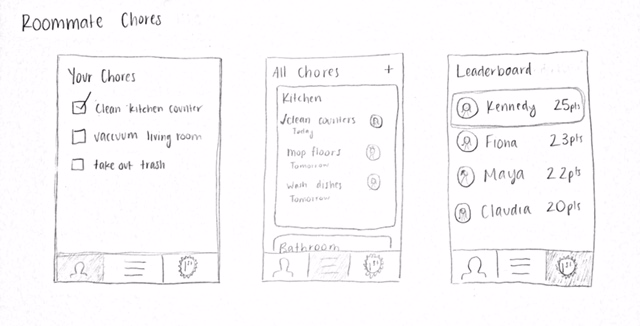
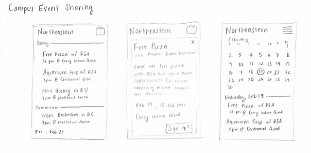
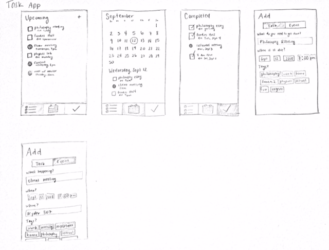
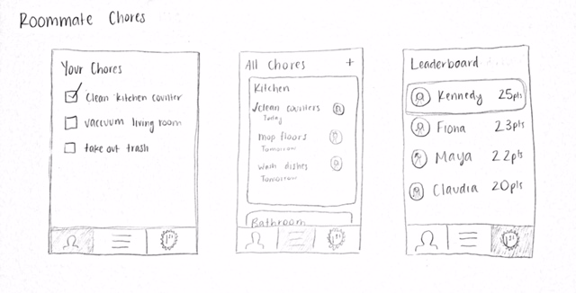
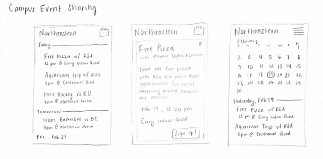
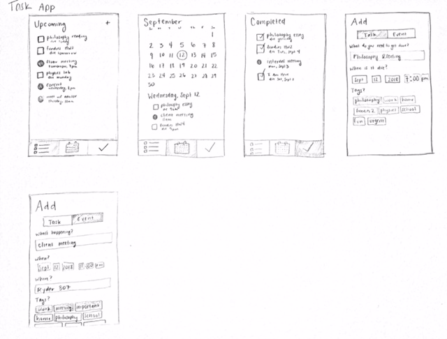

IS 4300: Homework
Email: gridley.f@husky.neu.edu
Homework 1: Project Brainstorming
1. Roommate Chores

This app is designed to make it easier for roommates to organize and assign chores. One common problem when sharing an apartment with
others is that it is not clear who is supposed to do what chores when, so chores often go undone. Eeach roommate would have the app,
and at the beginning of each week, all the roommates can set and agree on who is responsible for each chore. Those chores then show
up on the assigned person's chores list. Roommates can earn points by completing chores, and the earlier they complete the chores the
more points they receive. This encourages roommates to actually do the chores once they are assigned. Gone are the days of a messy apartment!
2. Campus Event Sharing

There are dozens of events happening on campus every week, but finding out about these events often requires a student to coincidentally
see a sign posted somewhere on campus. This leaves students feeling like there aren't enough events happening, and causes a lack of
attendance at many events. This app would provide a complete list of all events happening on campus, giving events more visibility for
a wider range of students. Students will no longer have to browse through many different social media platforms and websites to try to
find events to go to, as they will be able to view and sign up for/buy tickets to all the events available to them.
2. Task/Event Management

As a college student, I have many tasks and events happening all the time, and I like to stay organized so I know what I need to be
working on or where I need to be. There are many calendar apps out there, but I have not found one that makes it easy to manage both
tasks/assignments as well as events. I want to be able to add a task or assignment to my list of things to do and have it automatically
show up in the calednar, so I can see both the events that are happening on a certain day as well as any tasks or assignments that are
due that day. Instead of having a separate task/list app and calendar app, this would combine the two, making time management simpler
and more effective.
1. Roommate Chores 
This app is designed to make it easier for roommates to organize and assign chores. One common problem when sharing an apartment with others is that it is not clear who is supposed to do what chores when, so chores often go undone. Eeach roommate would have the app, and at the beginning of each week, all the roommates can set and agree on who is responsible for each chore. Those chores then show up on the assigned person's chores list. Roommates can earn points by completing chores, and the earlier they complete the chores the more points they receive. This encourages roommates to actually do the chores once they are assigned. Gone are the days of a messy apartment!
2. Campus Event Sharing 
There are dozens of events happening on campus every week, but finding out about these events often requires a student to coincidentally see a sign posted somewhere on campus. This leaves students feeling like there aren't enough events happening, and causes a lack of attendance at many events. This app would provide a complete list of all events happening on campus, giving events more visibility for a wider range of students. Students will no longer have to browse through many different social media platforms and websites to try to find events to go to, as they will be able to view and sign up for/buy tickets to all the events available to them.
2. Task/Event Management 
As a college student, I have many tasks and events happening all the time, and I like to stay organized so I know what I need to be working on or where I need to be. There are many calendar apps out there, but I have not found one that makes it easy to manage both tasks/assignments as well as events. I want to be able to add a task or assignment to my list of things to do and have it automatically show up in the calednar, so I can see both the events that are happening on a certain day as well as any tasks or assignments that are due that day. Instead of having a separate task/list app and calendar app, this would combine the two, making time management simpler and more effective.